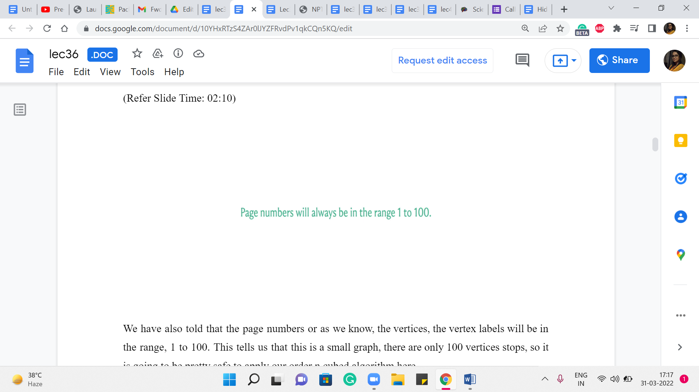
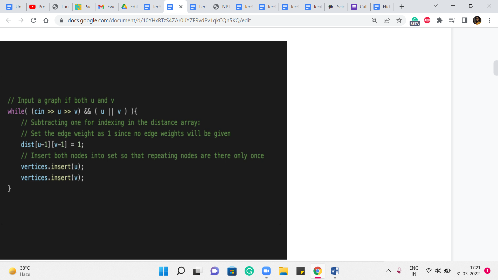
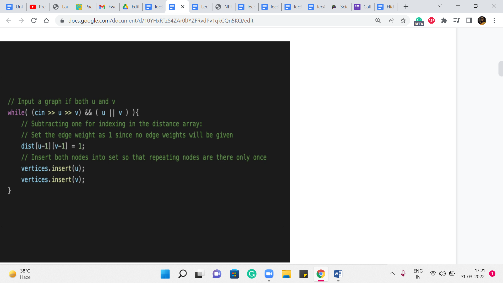

M 3 (APSP [Floyd-Warshall] | Page Hopping)
Lecture - 36
Shortest Paths - Module 3 (APSP [Floyd-Warshall] | Page Hopping)
Welcome back to the second in the last segment of the third and the last module in week six. And we have been discussing ‘shortest paths’ broadly. But in this module, our focus has been on the variant called All Pairs Shortest Paths. And in the previous segment, we described the Floyd-Warshall algorithm that gives us a slightly better running time compared to running, for example, Dijkstra’s algorithm n times, especially when the number of edges is proportional to n squared.
So, this is the algorithm that we want to implement in this segment. And to do that, we are going to use a problem called ‘page hopping,’ which was ICPC World Finals problem from 2000. This is probably one of the most straightforward problem statements that we have seen.
(Refer Slide Time: 00:58)

This is from the problem statement for page hopping. We are told that you are given a graph in which all the nodes can be reached from any starting point. And your job is to find the average shortest path length between arbitrary pairs of nodes. Of course, the sentence is sandwiched between a bit of a story about the internet and so on. So, I am not going to get into the story. But if you are curious, then you can certainly lookup the link in the description and read the full problem statement. I will give you a few other snippets from the problem statement that will clarify the kind of graph that we are working with and what the constraints are.
(Refer Slide Time: 01:35)

So, first of all, we are told that each test case will consist of an arbitrary number of pairs of integers a and b, each representing a link from a page numbered ‘a’ to a page numbered ‘b.’ So, again, we are talking about pages here because the nodes in this graph really correspond to internet pages.
That is part of the story. But you can see here that the edges are connecting pairs of vertices in a fashion that is clearly directed.
And in fact, the problem statement even has a picture and an example that makes it quite clear that the graph that we are working with is a directed graph. So, that is the first thing to note.
(Refer Slide Time: 02:10)
 
We are also told that the page numbers or as we know, the vertices, the vertex labels will be in the range 1 to 100. This tells us that this is a small graph. There are only 100 vertices tops. So it is going to be pretty safe to apply our order n cubed algorithm here.
The next thing that we are told is that there are no self-referential links, which is the same as saying that there are no self-loops. And we also told that there is at least one path from each node to every other node in the graph. So, in the context of directed graphs, this is essentially a promise of strong connectivity.
Now, if you are hearing that term for the first time, do not worry about it. It is essentially the analog of connectivity from undirected graphs. And it is exactly what is being said here, which is that you can go from anywhere to anywhere else in the graph. So, this is also given to us. We never going to get stuck with these large infinite values for any better vertices, which is a useful promise to have as we go along.
So, with all that said, let us now turn to the implementation. I will say that in this problem, we are given a graph with at most 100 vertices. And we are also told that there are no edge weights involved. So, it would also be perfectly valid to take your BFS implementation from last week and just try to run that ‘n’ times.
So, I definitely encourage you to give that a shot. It is a valid alternate solution. But since we want to use this problem as an excuse to implement the Floyd-Warshall algorithm that we discussed in the previous segment, that is what we are going to go ahead and do now.
(Refer Slide Time: 03:50)
 

So, the first part, as usual, is just taking the input in and doing some initializations. I will say that most things here are perfectly routine. But the way the input is specified here is a bit unusual, in that it is just given as a list of edges terminated by pair 00. In particular, you do not have the number of vertices or the number of edges given to you explicitly.
Now you do need this information to compute the average shortest path distance because remember, in the end, you want to divide by the number of pairs of vertices that you have considered, which is pretty much all pairs here. So, you could essentially count the number of vertices in a number of different ways.
What I am going to do here is just initialize a set. And every time we see an edge, we add both of its endpoints to the set. Notice that the vertices will not get repeated because we are using the set data structure here. And when you want to figure out the number of vertices at the very end, we can just look up the size of the set that we have built on the way and that should take care of it.
So, that is why you have this set – the ‘vertices variable’ here, which is in fact, a set. Alright, so we also have a distance array. This is declared, I think, in the global scope. And it is committed to having memory amounting to accommodating 100 vertices. We know that because that is the limit. That is all that we are going to need to reserve for ourselves. All of this is inside a ‘while’ loop, by the way.
So, these are just the relevant snippets that I am sharing here. But I think if you want to make sense of the whole thing, you might want to look up the code, the full code, in the repository. Again, as usual, the link is in the description. In any case, when we are processing afresh instances, which is what is happening in this part of the code, you want to initialize your distance array so that the values between pairs of vertices are just initialized to infinity.
And of course, we also have ‘i to i’ being initialized to 0 because (it) does not take any work to go from a vertex to itself. Now, as we process the edges, we are going to update the values of this distance array. You can initially think of the distance array that is just being an adjacency matrix. That is what it is going to be when you read the input n for the first time.
But then you can just reuse this adjacency matrix as the distance values that we want to compute using Floyd-Warshall later on. So, let us just read in the input here. So, we get these pairs of vertices, and we keep reading them as long as we do not encounter the ‘00’ vertex. And as you can see, we are inserting these vertices into a set to just keep track of them.
And we are initializing the distance of u-1, v-1 to 1. This is because I just wanted the vertex indices to range from 0 to n-1. You could do this differently. And it is not going to be a problem either way. So, now that we have the initial distances that are just given by the direct edges, remember that we have already implicitly carried out the base case for the Floyd Warshall algorithm.
(Refer Slide Time: 07:14)

So, that is the ‘r = 0’ case. That is already done by simply reading in the values coming from the input for the information about the edges. The rest of it, these nested ‘for’ loops that we have here are implementing this reference that we discussed in the previous segment. So, the outermost ‘for’ loop is keeping track of the phases. We are going to then go through every pair of vertices and see if we need to update the value of the distance between i and j.
So, essentially, we want to know, do we really use the ’k’th vertex or not. And if we do, the new distance is going to be essentially the sum of the distances: distance [i][k], and distance [k][j]. If that is going to be better than whatever we have previously, then we need to update the value of distance [i][j]. So, you could also write this a little more succinctly as an update of distance [i][j] is being min of distance [i][j], the sum that you see here. Either way, it has the same effect.
And that is essentially all of Floyd-Warshall. Okay. So, if you write it without the comments, and you write it in the style of recomputing a minimum, or overriding the value of distance [i][j] with the minimum between distance [i][j] and the sum that you see here, it is really going to be just four lines of code, which is what makes it an attractive proposition, especially in a contest situation if you just want to go something up quickly.
Just remember here that the complexity of this approach is fixed at order n cubed because these three loops are going to run their course for sure, irrespective of how many edges are there in the graph, for example. So, just make sure that you apply this algorithm only when you are confident that your constraints can handle it.
In particular, watch out for the number of vertices being more than 450, then you might just be in a little bit of trouble with this approach. But if you have a small number of verses, then this is really a good option to have in your toolkit because of just how short the code is and how elegantly everything works out. So, with that, I think we come to an end to our discussion about shortest path algorithms.
(Refer Slide Time: 09:45)


I will just conclude here with one small comment about a bit of detail that I have not talked about very explicitly before, which is about how you set the value of infinity. So, sometimes you may find that not setting this value properly could lead to bugs, which are hard to detect. So, you want the value of infinity, which is what you initialize your distance array 2, to be on the one hand large enough, but also on the other hand, not too large.
Let me explain what I mean by this. On the one hand, you do want it to be large enough because remember that when you are relaxing edges, this is the value that often your d of u plus w is going to be computing with. So, for instance, if you have a path, that is an actual path but it is really, really costly, when that is being compared against infinity, if your value of infinity is not large enough, your code might just say that ‘we are better off keeping the infinity-edge.’ Now, that is a problem because that infinity value really represents a path that does not exist.
So, you want to make sure that your value of infinity is greater than the sum of all the weights of the edges. So, typically, you will have some upper bound on the values of the weights of the individual edges. So, let us say that that upper bound is some x. And let us say you have m edges, you want to make sure that your value of infinity is set to something that is larger than m * x.
Now, what did I mean when I said that it should not be too large. Sometimes you may be tempted to say that – let us just make this as large as we can. And particularly, you might be aware of the limits library, which gives you access to the largest possible value that you can store in a variable of a certain type.
So, for instance, you could invoke the built-in constant int Max to get the largest value that you can store in an integer variable, which would be something like 231 -1 or something like this. So, you might be tempted to initialize infinity to int Max. Now, what is the problem with this?
Well, the thing here is that you could run into some really nasty overflow issues. When you are trying to evaluate the condition for relaxation, often, you might be comparing values that look like INF plus w. Because you are comparing d of u + w, and d of u, to begin with, may well be INF. Now, if INF is set to int Max, and you add a value W to it, what might end up happening is that you experience overflow, and this becomes a large negative number.
And this will dominate whatever it is that is on the other side of the equation. This will appear to be smaller than d of v. So you will end up relaxing an edge that you really should not. Because what you want, the behavior that you want from your setting of INF is that INF any finite value should still be INF, it should not become accidentally a small value.
So setting your value of INF to be the very limit of the data type that is, you know, storing the value of INF – that is a dangerous thing to do. So, do not make it go all the way to the brink, because that is going to be problematic. Usually, a safe thing to do is to just set it to a value that is sufficiently large.
So, just look at your maximum weight limit multiplied by the number of edges, and pick a value that is a bit larger than that. Now, if int cannot handle it, or if that seems like it is going to be suspiciously close to the upper limit, and you might experience an overflow issue, just use a long int instead of an int or something like this.
So, just be a little bit careful about how you initialize your distance array. Because this can be a source of bugs that are hard to find. So just a very minor detail, but something that is worth being careful about. So, with that, we do come to an end of our discussion of shortest path algorithms.
I hope you enjoyed this little journey through various cases starting from BFS all the way up to Floyd-Warshall. And in between, of course, we met Dijkstra’s algorithm, modified Dijkstra’s algorithm, and Bellman-Ford. It can be a lot to keep track of, so I would recommend just having a little bit of a cheat sheet with you, which just summarizes the various complexities and the scenarios in which these algorithms are applicable.
So, you know which one you want to use in a particular situation. Now, most of the problems that we saw in the videos were fairly direct applications of shortest paths because the goal really was to have an excuse to implement the algorithms that we were learning. On the other hand, there could be problems where it is not as transparent – that you want to be working with the shortest path algorithm.
Or maybe you need to modify the shortest path algorithm that you have learned in some subtle way to account for whatever it is that needs to be done. So, there are a couple of examples of these kinds of problems in the ‘extras’ section. So if you have time, be sure to check them out. In the meantime, we will, as always, look forward to your contributions to the official repository.
So, once again, we have a week where all the official solutions are coded in C++. So, if you have versions of this that are written in Python or Java, we will really look forward to your pull requests in the repository. Thanks very much in advance. And of course, I hope that we will continue this conversation in Discord or over the Google mailing list, especially if you are listening to this during an active run of the course.
So, I will see you around there. Thanks very much for watching and I will see you back in the next module where we are going to talk about minimum spanning trees. Bye for now!